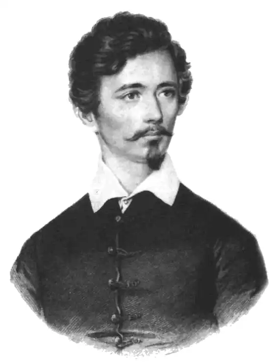

Шандор Петефі (1823-1849) — угорський поет. Батько Петефі, овенгерившийся серб, був сільським м'ясником, мати, словачка за походженням, замолоду служила хатньою робітницею.
Ще хлопчиком, кинувши школу, Петефі вступив в трупу мандрівних акторів, з якої обійшов мало не півкраїни. Дуже скоро розчарувавшись у примітивному провінційному лицедействе, він вступив на військову службу. Солдатське життя також виявилася не по душі сімнадцятирічному Петефі. Він спробував було продовжувати своє залишене на півдорозі освіту, але гордого юнака ніяк не вдавалося підкоритися тодішньої шкільної дисципліни. Знову Петефі намагається стати актором, але безуспішно. Лише в поезії він знаходить своє покликання. У той же час Петефі з незвичайним завзяттям продовжував свою освіту — оволодів німецькою мовою, вивчив французьку та англійську. Один час займався перекладами іноземних романів (згодом став одним з найкращих угорських перекладачів Шекспіра). Із захопленням вивчав історію Великої французької революції і твори утопістів. Нарешті в 1844 році знаменитий угорський поет Михайло Верешмарті, визнавши величезне дарування юнаки, видає збірку його віршів. Пісні Петефі облітає всю країну, всюди їх співають або декламують, з жадібним інтересом читають його "Подорожні нариси", що описують різні області Угорщини і нагадують гейневские "Reisebilder". Він пише сільський гумористичний епос "Сільський молот", в якому піддає осміянню пихатий і багатослівний стиль тодішньої літератури, потім "Богатиря Яношу" — поему, в якій буйна фантазія угорського селянина все ж не в силах порвати узду реальності. Під впливом "Богатиря Яноші" Арань пише свого "Гольди", який зустрічає захоплений прийом з боку Петефі. Між обома поетами зав'язується глибока душевна дружба.
Величезний поштовх літературно-політичної діяльності Петефі дала революція 1848 року. В Угорщині буржуазна революція найтіснішим образом перепліталося з національно-визвольною боротьбою, спрямованою проти напівколоніальній експлуатації країни з боку напівфеодальної Австрії. Боротьба ця була національною, оскільки Угорщина прагнула до відокремлення від Австрії, до незалежного державного існування, до створення й розвитку власної національної культури і в той же час демократичною, оскільки була спрямована проти тормозивших капіталістичне розвиток досить значних залишків феодалізму. Література, яка служила цим цілям, теж повинна була стати національною, але разом з тим і народної, оскільки вона стала виразником прагнень найширших суспільних верств — опозиційної дрібної буржуазії та селянства. Петефі був немов покликаний стати вождем нового руху. Його поезія була могутньою зброєю і завдяки їй він, з одного боку, завоював собі нечувану популярність, а, з іншого — вступив у конфлікт з консервативними елементами як у літературі, так і в політиці. Характерно, що, коли спалахнула революція, помірне національний уряд кинув в паніку чутки про те, що з "Ракошского поля йде Петефі з 40000 селян". Під проводом Петефі будапештська — учнівська та робоча — революційна молодь завоювала штурмом 15 березня 1848 року свободу друку, і першим, що вийшло з завойованої революційним шляхом друкарні, була його "Національна пісня". Шандор Петефі прагнув роздути революційний вогонь до граничного спека. Він був революціонером-плебеєм, ненавидевшим всякого роду угоди, розуміло і изобличавшим нещиру політику Кошута по відношенню до эксплуатируемому селянству і взагалі трудящим. У його віршах все більше розгорялися ненависть і гнів до династії і до феодального строю, він все енергійніше вимагав республіки (наприклад, "На шибеницю королів" або "у мене в руці стріла, куди пустити її? Переді мною королівський трон, пущу в його оксамит… Хай живе республіка!"). У пристрасних, часом нещадно бичующих сатиричних віршах Петефі нападає на феодальну аристократію за її зарозумілість і презирство до народу, на сите байдужість поміщиків, на филистерство "благородного" чиновництва, на лицемірство попов (яких особливо ненавидить). Його поезія — потужний заклик до селянської революції, про героя якої Георге Доцци, вождя угорського селянства XVI століття, він написав ряд революційних віршів. Петефі часто розробляв такі теми, як повстання, як помста народу, що розправляються зі своїми гнобителями. Його наскрізь радикальні, не знають компромісів переконання озброїли проти нього впливові буржуазно-дворянські угруповання, так що йому не вдалося пройти в депутати. Тоді він іде в армію, щоб боротися за свої переконання в революційній війні проти австрійської реакції. У той же час, не покладаючи пера, він писав запалюють революційні вірші та статті, в яких часом піддавав різкій критиці помірну політику уряду. В серпні 1848 року, в той час, коли популярність Кошута була в зеніті, Петефі писав Араню: "Я вірю, що ми напередодні грандіозної революції, а ти знаєш, що передчуття мене не обманюють. Тоді нашим першим обов'язком буде поставити шибеницю і відправити на неї десятьох" (членів уряду — Ц.-Л.). Коли російський царизм, цей "жандарм Європи", задушив угорську революцію, куля зупинила життя полум'яного поета і революціонера. Йому ще не було 27 років, коли 30 липня 1849 року він загинув у битві при Шегеншвере. Таку смерть Петефі не раз пророкував собі у віршах. Політична спрямованість поезії Шандора Петефі зближує його з Беранже, Гейне, Гервегом і Фрейлигратом. Петефі культивував поезію Беранже, цінуючи її радикально-плебейскую сутність, при нагоді перекладав його, але все ж Петефі перевершує Беранже своїм справжнім пафосом і багатогранністю. Він, може бути, примітивніше, ніж Гейне, але зате його щире, свіже, оптимістичніше; до Гервегу і Фрейлиграту він ставиться так, як угорська революція 1848 року до німецької: він значніше і того й іншого. Напрошується порівняння Петефі з Некрасовим, близьким йому своєю соціальною тематикою і тієї риторичної інтонацією, яка однаково характерна для обох революційно-демократичних поетів. Таке зіставлення буде цілком правомірно, якщо ми врахуємо соціально-історичні відмінності домартовской Угорщини і некрасівській Росії і не забудемо також, що Петефі не був нічим пов'язаний з дворянством і його культурою. Крім того в творчості Петефі, незважаючи на його коротке життя, відбилося все багатство ідейного змісту тогочасної Європи, спадщина Великої французької революції. Він був мабуть самим філософським і всеосяжним поетом з усіх співаків буржуазно-демократичних революцій і безсумнівно самим непримиренним з них. Офіційна історіографія звеличує Шандора Петефі головним чином як поета любові, певцасемейных почуттів і віртуоза в мистецтві пейзажу. Безсумнівно Петефі великий і в цих областях. Пристрасність і разом з тим здорова мужність його любовної лірики, ідилічна безпосередність і задушевний гумор віршів, присвячених батькам і друзям, сповнені неповторної принади опису природи — все це справляє чарівне дію на читача. Але це лише одна з сторін багатогранного обдарування Петефі. Крім згаданих вже епопей Петефі писав елегії, рапсодії, оди, сатири. Йому належить багато епіграм, величезна кількість пісень і дрібних оповідних віршів. Він використовував таким чином найрізноманітніші поетичні жанри в різних формах (чисто угорська метрика і класичний або західно-європейський вірш). Особливо характерна для Петефі так звана pointe — тонка, гостра кінцівка, раптово завершальна вірші. Всі його поетичне мислення реалістично. У нього немає побитих метафор та образів — вони завжди у нього свіжі й пережиті, як у поета, глибоко пов'язаного з природою та творчістю близьких цій природі селянських мас. З самого дитинства Петефі зрісся з життям і думкою бідноти, особливо селянській, і це дало його поезії ясний, можна сказати, матеріалістичний фон. Ставши радикальним інтелігентом, він вимагає прискореного економічного і культурного розвитку країни (капіталізації, урбанізації, цивілізації), але все ж залишається міцно пов'язаних з бідним селянством, з якого вийшов. Йому не треба було маскуватися або "сходити", коли він змушував звучати у своїх віршах "голос народу", — це був його власний голос, але одночасно — новий тон в угорській літературі, тон ліричної безпосередності, простоти, народності. Всупереч твердженням реакційних угорських істориків Петефі насамперед — політичний поет, поет революційної демократії. Він був представником того крила революційної інтелігенції, яке було дуже тісно пов'язане з селянством. Під час революції він боровся за доведення революційної війни до кінця, за розширення селянської революції, за якобінський метод революційної боротьби. Вірність традиціям Великої французької революції він зобразив своєї передчасної героїчною смертю.